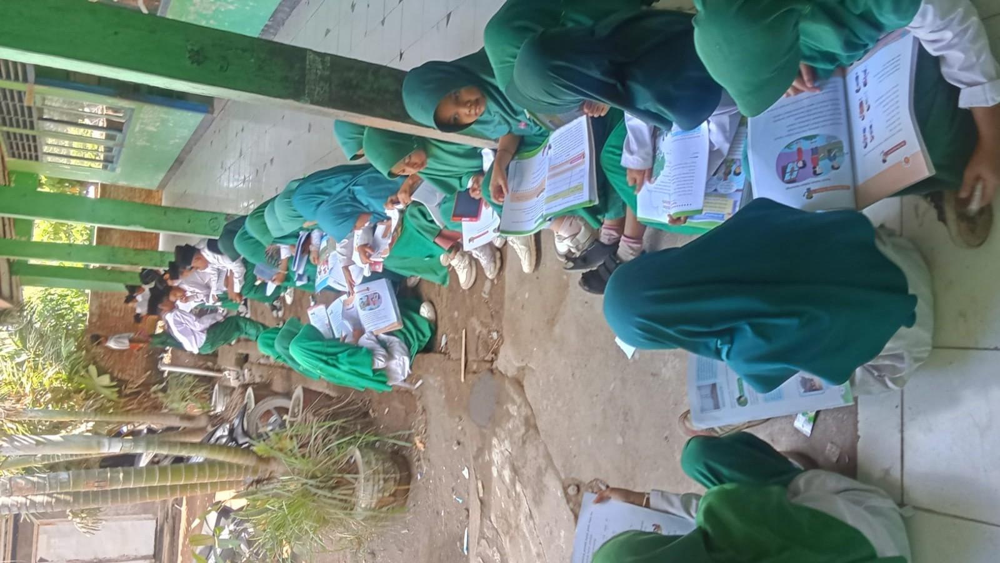
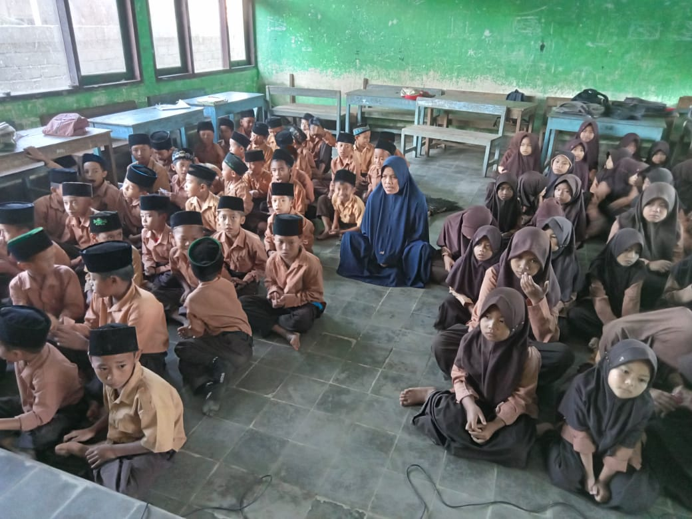

Pembelajaran Aktif
Kegiatan belajar yang mendorong siswa untuk bertanya, mencoba, dan berkarya.
Madrasah Ibtidaiyah Swasta
Selamat datang di MIS NW Kadindi. Tempat belajar, tumbuh, berkarya, dan meraih cita-cita dengan ilmu pengetahuan serta akhlak mulia.

Madrasah tempat meraih masa depan
Semangat belajar setiap hari
Membiasakan sikap terpuji
Mengembangkan bakat dan potensi
Mendidik dengan ilmu, membimbing dengan hati.

MIS NW Kadindi merupakan tempat peserta didik mengembangkan pengetahuan, keterampilan, karakter, dan nilai-nilai keislaman.
Melalui pembelajaran yang menyenangkan, siswa didorong untuk menjadi pribadi yang mandiri, santun, kreatif, dan bertanggung jawab.
Informasi lebih lanjut →Ruang untuk mengembangkan potensi setiap anak.
Kegiatan belajar yang mendorong siswa untuk bertanya, mencoba, dan berkarya.
Menumbuhkan kebiasaan baik, sikap santun, dan nilai-nilai keislaman.
Mengembangkan bakat melalui kegiatan seni, olahraga, dan karya siswa.
Belajar, bermain, beribadah, dan berkreasi bersama.

Dokumentasi aktivitas belajar siswa.

Dokumentasi kegiatan olahraga dan permainan.

Dokumentasi kegiatan pembiasaan keagamaan.
Silakan hubungi pihak madrasah untuk informasi lebih lanjut.